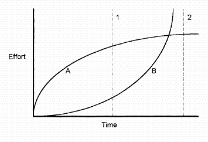

APL93: Solving Wicked Problems with APL
Vector 10:2, page 63
Chris made this tutorial thoroughly enjoyable by including masses of the APL array type jokes. I could not write fast enough to record all of them but have included as many as I could. The objective of the tutorial was to demonstrate that APL is an excellent language for solving those difficult problems that give computing departments such pain. Having attempted to do a similar selling job myself, which I found very difficult, I was impressed with the way Chris went about the task. I would loved to have had in the audience some of the die-hards that I have tried to convert to see how they would have taken it all.
The first hour was spent defining what Chris meant by wicked problems. He poked fun at the advertising for packages which claim that you can do anything without writing a line of code. I liked the set of challenges which included getting your database to dial a phone number when you click on it – without programming. Chris makes the point that if Vendors make packages so simple that idiots can use them, then it is inevitable that sooner or later idiots will be specially hired by companies to use the packages.
Four kinds of programmers were identified. The Professional Programmer has a computer science training and solves other people’s problems, but has to have the problem described in detail as he has no experience in the field. The Domain Expert has a specialist skill, for example Finance or Engineering, and uses computers as a tool to solve his problems. The Local Guru is a Domain Expert who has taught himself computing, and has become so expert that he can respond quickly to users needs because he understands both the problem to be solved and the computing that is necessary. The Commercial Software Developer is probably a Local Guru who has identified a market for a general solution to the class of problems in the field of his original expertise. It was interesting to have these definitions of types of programmers so clearly explained as in the past I have filled all these roles at one time or another.
A wicked problem is defined as one where there has never been a computer solution applied before, where the definition of the need keeps changing, and anyhow the users are not entirely sure of what they want. The traditional computing solution is to apply the Waterfall Method, which involves the examination of the existing manual system, mapping out the tasks and data flow, and then designing and building a computer system which emulates the manual system. The Waterfall Method is attractive as it makes it clear what has to be done, there are milestones and deliverables, and there is something to manage.
This is fine for the big traditional computing problems, but Wicked problems make trouble. They do not allow a proper statement of requirements as the requirements keep changing, which gives the Waterfall Method severe indigestion. This is a recipe for the final disaster when the user says “It’s exactly what I asked for ... but it’s not what I want”.
A solution to the problem is what Chris described as Software Discovery, or Software Sculpturing. A sculptor models a big work in clay before cutting stone. Clay is cheap, bits can be added and moulded easily and bits can be sliced off and thrown away. Similarly with Software Sculpturing where you think a bit, build a bit, test a bit, tweak a bit and then repeat the process until you get what you want. The main thing is that the process must be cheap and fast. Also, software has to evolve to meet today’s need and to stay adaptable. There is a constant requirement for software to grow, change, improve and eventually to be replaced when the original starts looking like a second-hand car with dents.
What tools should be selected for the solution of Wicked Problems? There is familiarity, where the computing department know that they have had a success with a language. If there is a large pool of programmers already using the tool then it should be easy to get good people. The tool must seem to be easy to use. The actual tool chosen will also depend on perceptions, such as the status of the vendor and the quality of the selling.
Programming needs to be carried out in short steps. Each step needs to be able to fit within the short term memory window, which is about 5 minutes for most people. The bigger the task that can be fitted into the window the faster the overall job gets done. High level languages allow one to take giant steps. It must be possible to customise the giant steps so that any detail task can be carried, and it the tool selected must be enable easy experimentation and backtracking.
The dying fish diagram illustrates the problem of the different learning curves of the various tools available.

¶If you have a small job to do which gets you to time point 1 then package B with an easy learning curve is best. However, if you need to do serious programming it is best to master package A as you can never get to point 2 with package B. Wicked problems have a nasty habit of making you think that point 1 is sufficient, but when you get there you realise that you actually need to go to point 2. Sometime after the intersection of the two curves it becomes apparent that package B is not going to do the job and you have to backtrack to get to grips with package A.
Everything in the tutorial up to this point is pretty much standard material for the build up to the sales pitch for any computing tool that you care to name. Chris’s approach at selling APL started with the fact that arrays are the natural way in which to store data. APL’s multi-dimensional and nested shapes allow iteration through individual items in an easy and intuitive way. The APL style instructions on making an omelette would be “Get 6 eggs from the fridge and break them in this bowl”. The COBOL instructions would be “Get an egg from the fridge; break the egg in the bowl; have you got 6 eggs yet? no, so get an egg from the fridge; break the egg in the bowl; ...”.
The next step was an attack on the Object Oriented approach. Chris gave a rather nice analogy between OOP and APL by explaining the difference between baobab trees and maple trees. The branches of a baobab tree bend over and the tips plant themselves and produce daughter trees. Over the years you get a small forest of concentric circles with a giant tree in the middle. Maple trees produce copious seeds which spring up over a wide area to produce copies of the original tree. If there is a local problem, such as a drought, then the baobab tree is killed, but the maple trees are so widely distributed that a local drought will not kill all of them. In the OOP world if there is a problem with the central core of the object hierarchy then much of the dependent code may have to be scrapped. Whilst I agree that there is a difficulty in designing OOP classes, the level of code re-use seems much better that APL. For some reason there is a particular problem with APLers who seem to feel that it is beneath their dignity to re-use anyone else’s code, whereas there seems to be less inhibition in the Smalltalk and C++ world.
The importance of being able to experiment cheaply was emphasised. Behind every real success lies a hundred failures, so experiment must be cheap. On the other hand, it is important to avoid spiralling out of control into a black hole. You have to keep track of time and cost. Track this small step and plan the next step towards the final goal. A border needs to be drawn around the definition of the task so that everyone knows when it has been completed. Each step is the waterfall method in miniature. Chris gave us an amusing story of when he was first employed in the computing industry where his job was to keep the progress records of a large 5 year project. Some time before delivery day his system showed that they were 20% behind the target, but all the developers swore that they could catch up. It was not until the actual delivery day that it was announced that they would one month late. In fact they were 3 months late. Whatever language or method you use, you need to know if you are going to be late, and you need to warn the customer as early as possible.
Chris had to rush through the rest of his presentation as we ran out of time. As this was the part of the presentation where he started explaining APL in detail the omission was not too serious. I got a copy of the slides and found that we had seen 34 out of the 78 slides available. The APL exposition in the remaining slides looked comprehensive and well thought out.
In conclusion the benefits of using an Interactive Array-Oriented Environment were given as:
- Dramatically increases the speed of application development
- Streamlines data design to fit requirements
- Greatly simplifies enhancement and modification of applications
- Reduces bugs and time spent de-bugging
- Makes possible the construction of highly complex systems
But we would all say that, wouldn’t we?
(webpage generated: 6 December 2005, 15:08)